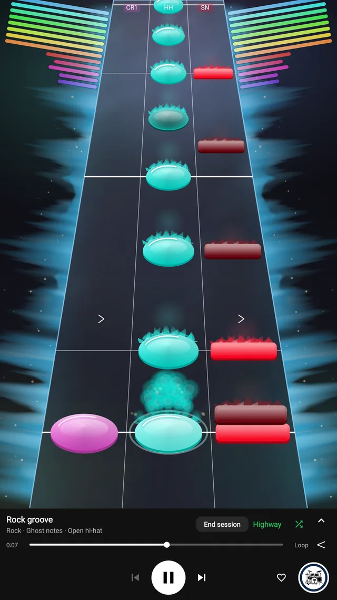
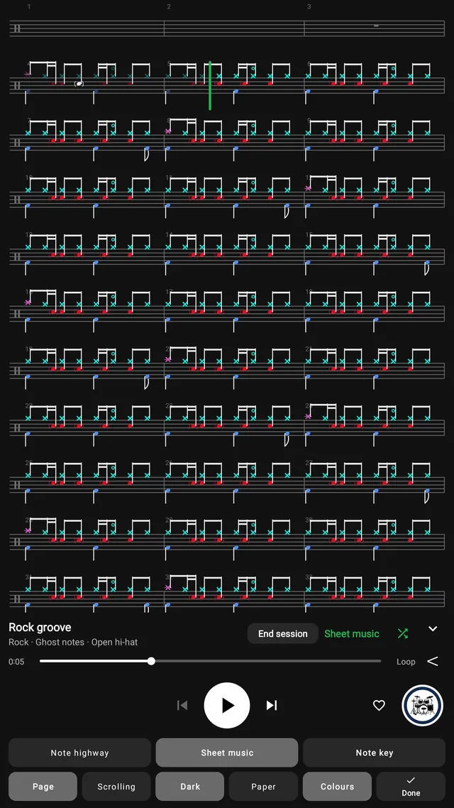
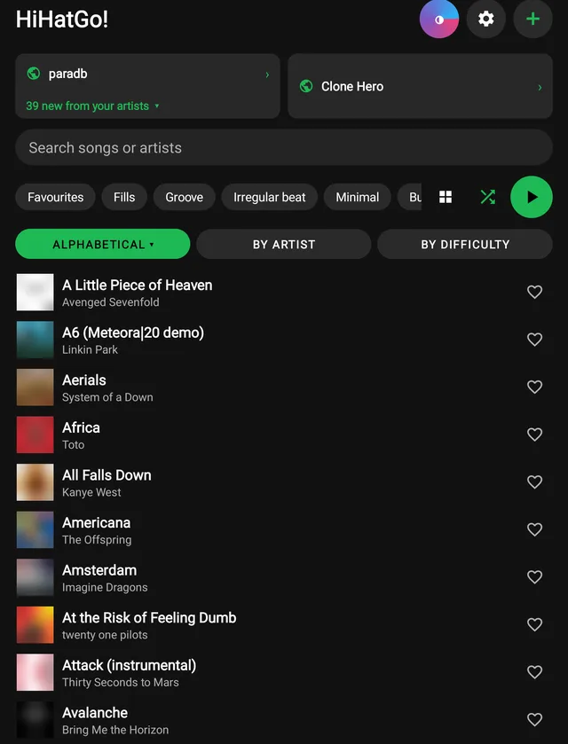
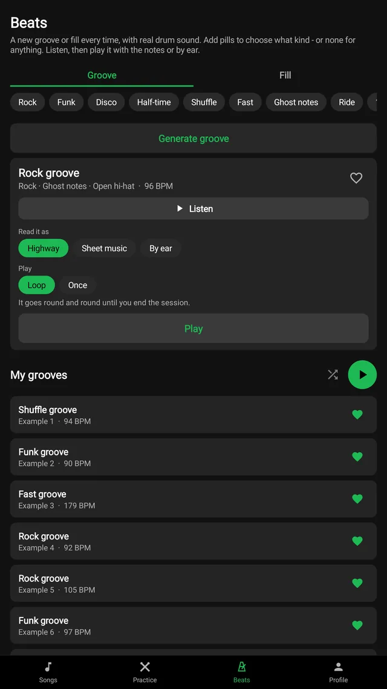
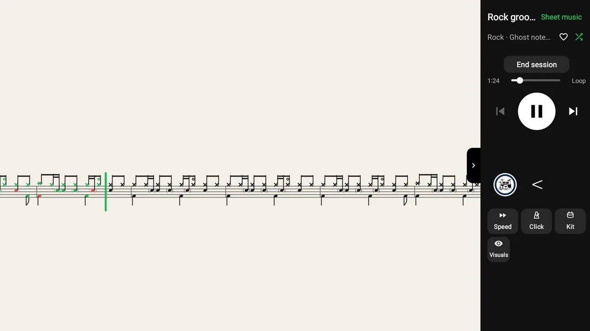
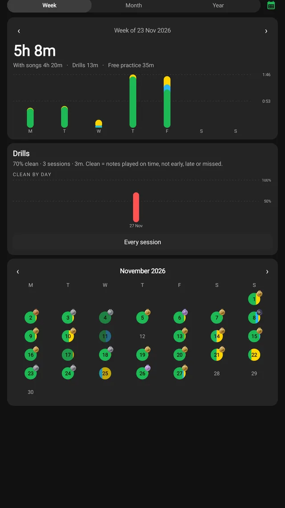
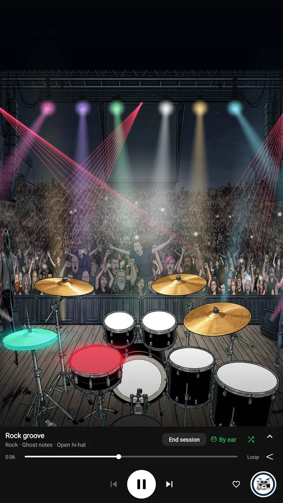

Drum trainer for electronic drum kits
Learn drums on your real e‑drum kit.
Plug your electronic drums into an Android tablet with a USB cable, pick a song or an exercise, and hit the pads when the notes reach the line. HiHatGo! hears every hit and tells you if it was early, late or spot on.
Like Guitar Hero drums or Paradiddle, but on your real e-drum kit. Plays your Paradiddle and Clone Hero drum charts.
Android tablets and phones · 7 days free · then one purchase of €9.99 + VAT (full price shown on Google Play) · no subscription · no ads



Everything you need to practise drums at home
HiHatGo! is a play-along screen, a practice book and a teacher's ear in one. Here is what you can do with it.
Play your Paradiddle and Clone Hero charts
Download a chart, open it with HiHatGo! and play it on your kit. Every hit is judged perfect, early or late.
- Paradiddle (.rlrr, .zip) and Clone Hero (folders, .sng)
- Paradb and Enchor one tap away
- Four difficulties per song, plus Jam
- Mute the song's drums, or remove them with on-device AI

Learn to read drum sheet music
Switch from falling notes to real drum notation at any time. It is the fastest way to learn reading, because you play what you read and see straight away whether you got it right.
- A page with a moving cursor, or one scrolling line you can zoom and drag
- Paper-white or dark, and each drum in its own colour while you learn
- A note key shows which line is which drum
- Notes you hit turn green, missed notes are marked as you go

A Practice page that grows with you
Rudiments, hi-hat, legs and grooves from different genres that loop for as long as you want. Each exercise has a ladder of levels, and you choose the speed yourself.
- Single and double stroke rolls, paradiddles, flams, drags and more
- Hi-hat and foot exercises for independence between hands and legs
- The Next level test: fog rolls over the notes and you play the pattern by feel
- Feedback on how hard you hit: accents, soft notes and the hi-hat pedal
- Drills history shows how clean every session was

A beat generator for endless new grooves
Tap Generate and get a brand-new groove or fill, played with real drum sounds. Never run out of things to practise.
- Rock, funk, disco, half-time, shuffle or fast
- Add ghost notes, ride, 16th-note hi-hat or open hi-hat
- Short or long fills, with toms or triplets
- Play it with the notes or by ear on a concert stage, in a loop or once
- Keep the beats you like in your own list

Practise songs the smart way
Good drummers don't play a hard song from the start again and again. They loop the hard bar, slow it down and speed it back up. HiHatGo! does that for you.
- Loop any part of a song and slow it down
- The speed trainer brings the tempo back up after clean loops
- Practise just the fills, or just the bars you got wrong
- Calibrate your kit's delay once, so every hit is judged where you see it

See yourself get better
Results after every song, practice history and medals keep you coming back to the kit every day.
- Score and accuracy for hands and for legs, early and late hits
- A practice calendar with weekly and monthly totals and score graphs
- Badges and medals for streaks, practice hours, clean runs and footwork
- Your practice time counts even when you play without a song
- Several profiles on one tablet, a guest mode and optional cloud backup

Screenshots

Learning to play drums? Start here
Free guides for drummers who practise at home on an electronic kit, whether you use HiHatGo! or not.
How to learn drums at home
Set up your kit, hold the sticks, play your first beat and build a daily practice plan that works.
Read the guide → TechniqueDrum rudiments for beginners
The rudiments worth learning first, the stickings, and how to practise them so you actually get faster.
Read the guide → ReadingHow to read drum sheet music
Where each drum sits on the staff, how to count notes and rests, and your first beats on paper.
Read the guide → SetupConnect an electronic drum kit to Android
Which cable you need, how to set up your pads and how to make the timing feel right.
Read the guide → The appHiHatGo! tips and tricks
Loops, the speed trainer, fills practice, the fog test, sheet music, Jam and more, explained.
See all tips → DownloadGet HiHatGo! on Google Play
Free download, every feature free for 7 days, then €9.99 + VAT once (full price shown on Google Play).
Open Google Play →Questions
Is there a PC or Mac version?
Not yet. HiHatGo! is an Android app for tablets and phones. There is no Windows or Mac version at the moment. A tablet is the best fit: the bigger screen is easier to read from behind the kit.
Which drum kits work?
Any electronic drum kit or pad controller that sends MIDI over USB. Most modules from Alesis, Roland, Yamaha, Millenium and others do. HiHatGo! is tested with the Alesis Nitro Pro. You can assign every pad yourself on the Drum kit page, so unusual layouts work too. See Connect your kit.
Can I play on the touchscreen?
No. HiHatGo! is made for a real electronic drum kit connected with a USB cable. It is not a touchscreen drum game.
What cable do I need?
A USB cable from your drum module to your tablet. Most modules have a square USB-B port, and most tablets have USB-C, so a USB-B to USB-C cable (or your module's own cable plus a USB-C OTG adapter) is all you need.
How much does it cost?
The download is free, and every feature is open for 7 days. After that you unlock HiHatGo! with a single one-time purchase of €9.99 + VAT (full price shown on Google Play). No subscription and no ads.
Is it like Guitar Hero, Rock Band or Paradiddle drums?
Yes, the idea is the same: notes come towards you and you hit them in time with the music. The difference is that you play on a real electronic drum kit instead of a plastic controller or VR, and the app also teaches you with sheet music, rudiments and grooves. HiHatGo! is not affiliated with Guitar Hero, Rock Band, Paradiddle or Clone Hero.
Does it work with Paradiddle and Clone Hero charts?
Yes. HiHatGo! plays Paradiddle charts (.rlrr song folders and .zip files, for example from paradb) and Clone Hero drum charts (song folders with notes.chart or notes.mid, and .sng files, for example from Enchor). Open the downloaded file with HiHatGo! and it is added to your library, no unzipping needed.
Does it come with songs?
HiHatGo! does not include copyrighted songs. You add your own music and charts: Paradiddle charts (.rlrr, .zip) and Clone Hero charts (folders, .sng). You can also jam along to any music file without a chart. The Practice page and the beat generator work straight away without any songs.
My hits look late. What can I do?
Run the delay calibration once in Settings → Audio & latency. Every kit and tablet has a slightly different delay; after calibration your hits are judged exactly where you see them. Bluetooth headphones add a lot of delay, so use the module's headphones or a cable.
I'm a complete beginner. Is it too hard?
No. Start on the Practice page with the first level of an exercise at a slow tempo, and read our beginner guide. Songs have easier difficulties, and you can slow any song down.
Ready to play?
Get HiHatGo! for your Android tablet or phone. Try everything free for 7 days.